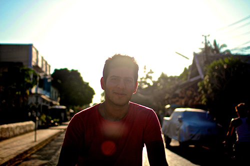

santiago rodriguez ortiz
Projects
About me
Im a Colombian internet entrepreneur. I like art, photography, have a big passion for history and love good food. But to be honest, I like partaking in almost any kind of activity. In general, Im very easy going, open minded and most people consider me a liberal. I really, really, love technology and all things computer, and hate anything that is mediocre, uneven or half baked in its essence.
I spend more time on the internet than I should, and professionally have always ended up in internet related ventures and jobs. I consider the internet one of the most amazing inventions in the history of humankind and by far the most important one in my lifetime. Why am I such a big fan? because I am truly and absolutely convinced that it will end poverty, reduce inequality and change the world we live in. The internet is the ultimate catalyzer for better education, communication and political change, and is rapidly shifting the world the economy from being natural-resource dependent, to human-knowledge based.
Im also a sucker for fast cars, domain names and crazy japanese gadgets. I rarely watch TV and spend most of my free time reading newspapers and online articles or playing squash.
Contact
You can always reach me on twitter @santi_a_gogo